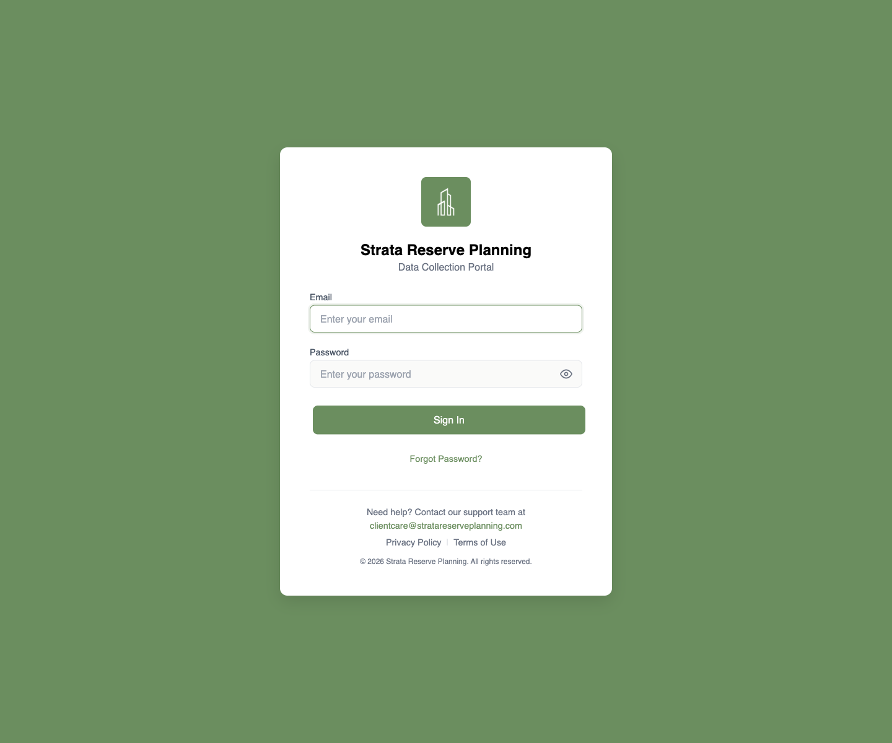
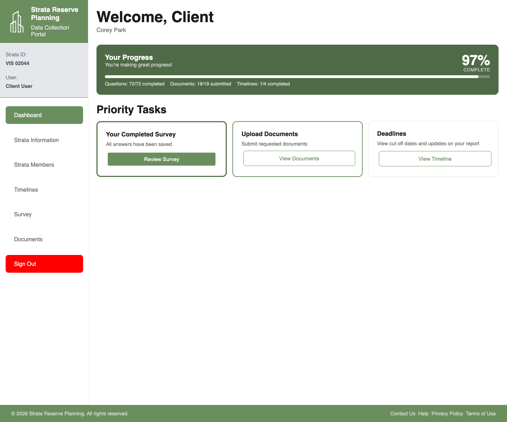
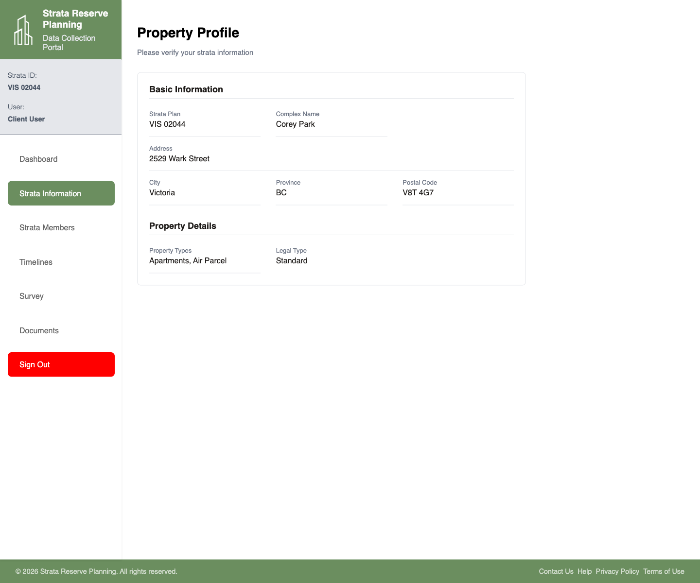
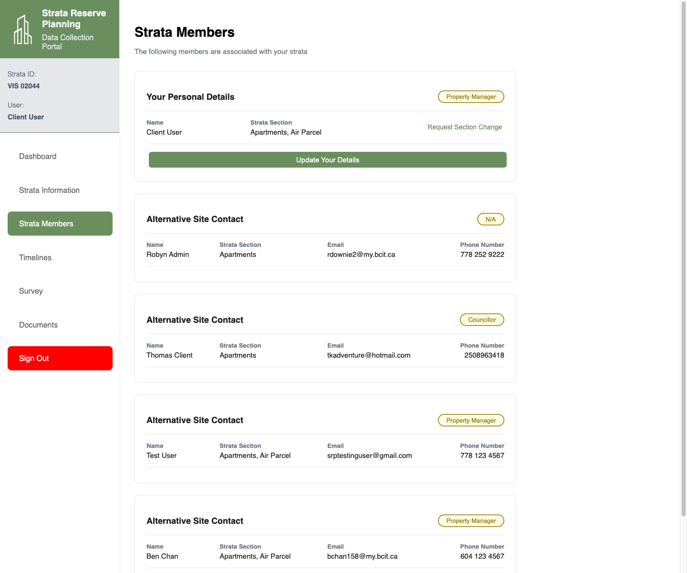
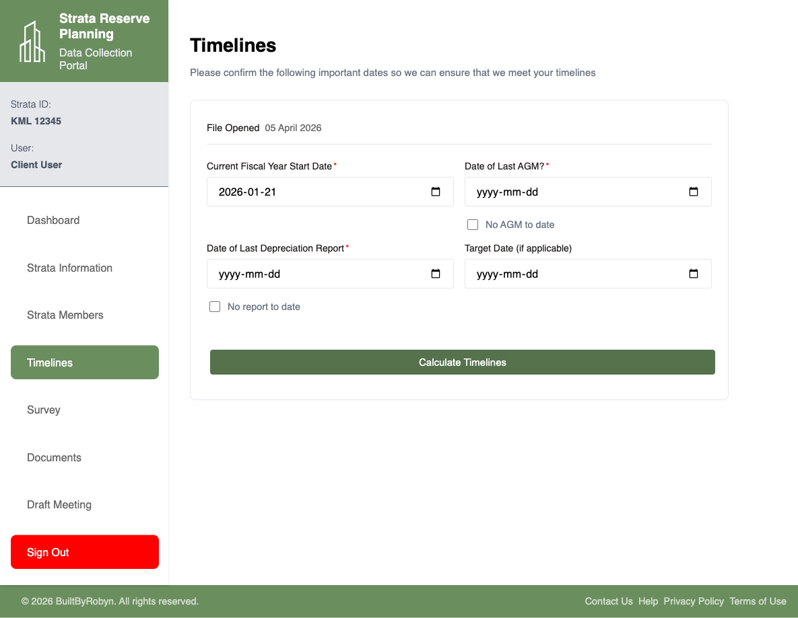
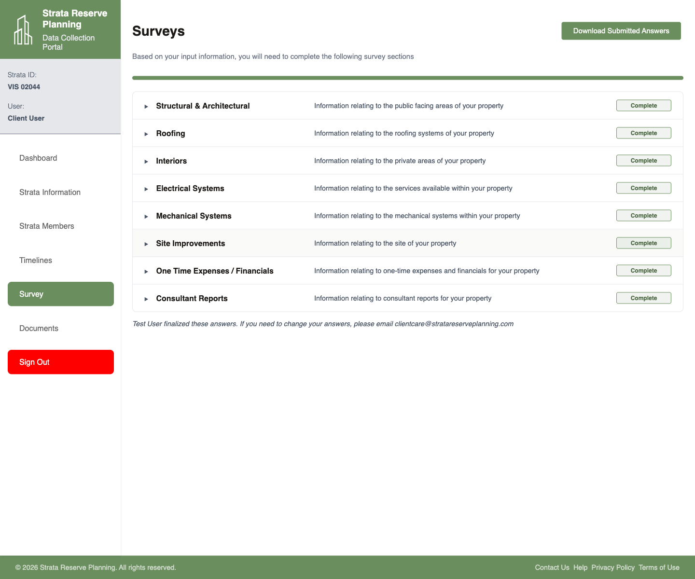
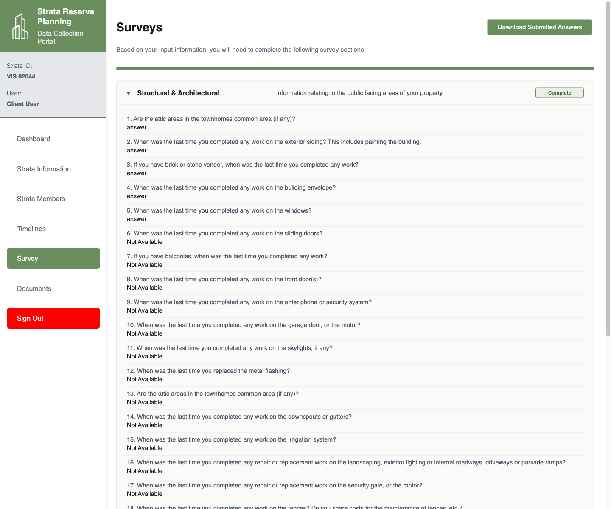
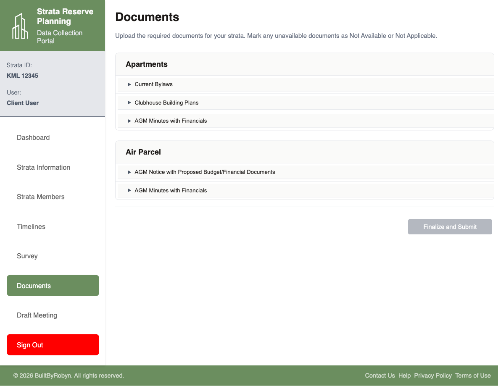
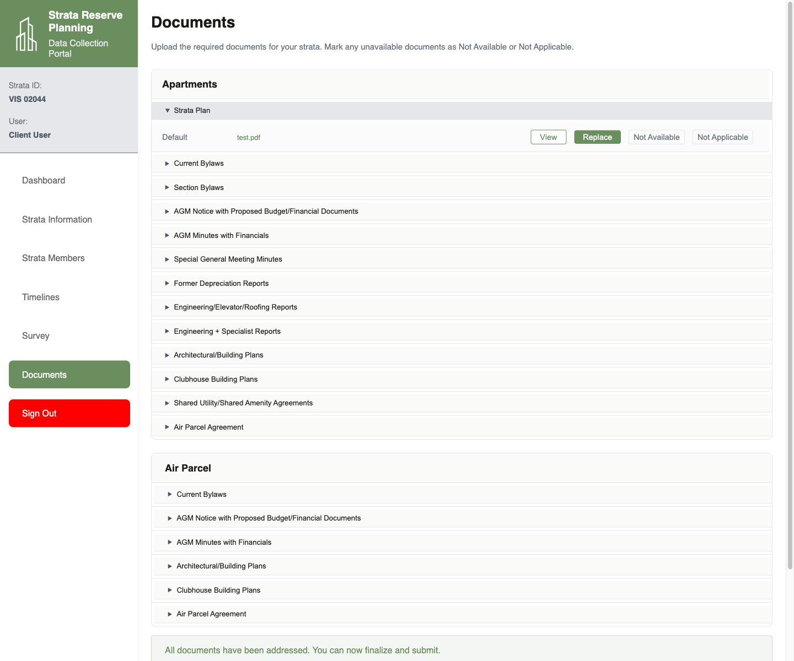
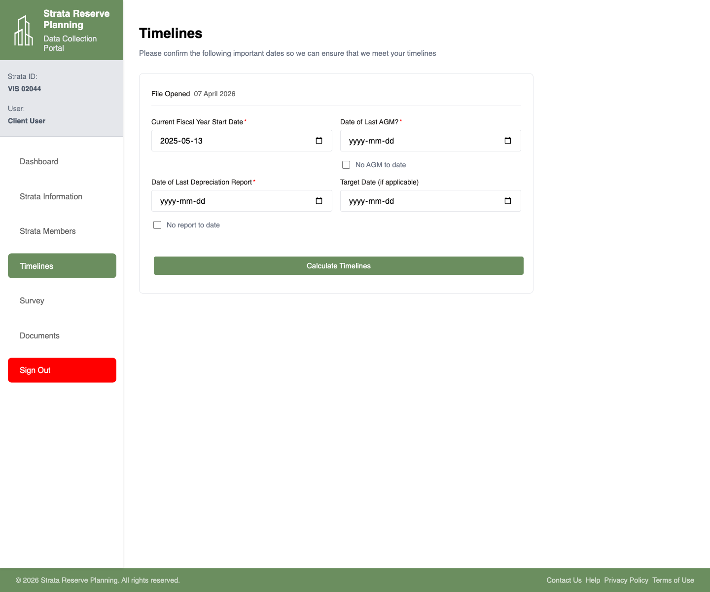

Client Portal Guide
This page combines the client walkthrough notes from the local guide files with fresh screenshots captured from the live demo portal. It is organized to mirror the original client documentation set.
Login & Dashboard
The client portal starts on the login page. After signing in, the dashboard becomes the main home base for the rest of the data collection process.
- Open the portal URL and sign in with the assigned email and password.
- If a password has been forgotten, use Forgot Password? from the login page before attempting again.
- After login, review the Your Progress panel to see how many questions, documents, and timeline items are complete.
- Use the three main dashboard cards to jump straight into Survey, Documents, or Draft Meeting.
- Use the left navigation for direct access to every client section.


Strata Information & Strata Members
These two pages show the building profile and the client member record associated with the strata. They are reference pages first, with update actions where permitted.
- Open Strata Information to confirm the property profile details such as strata plan, address, city, legal type, and property types.
- If any building details are incorrect, treat the page as a verification screen and contact the support address from the client guide rather than assuming you can edit the building profile directly.
- Open Strata Members to review the member record tied to the logged-in user.
- Use Update Your Details when personal contact details or password information needs to be changed.
- Use Request Section Change if the strata section allocation is wrong for the logged-in member.


Timelines
The timelines page collects key dates needed to plan and deliver the depreciation report request.
- Open Timelines from the left navigation.
- Confirm the current fiscal year start date and provide the date of the last AGM, or check No AGM to date if that applies.
- Provide the date of the last depreciation report, or check No report to date when no earlier report exists.
- Optionally enter a target date if the strata has one.
- Select Calculate Timelines after reviewing the dates carefully, because the transcript notes that these dates can lock after calculation.

Answering Surveys
The survey flow starts with an overview of required sections, then continues into detailed section-by-section questionnaires.
- Open Survey to review the required survey categories.
- Use Download Survey if a copy is needed for offline review.
- Select a survey category to open its questions.
- Answer each top-level question or use the applicable availability options described in the transcript guidance.
- Continue page by page until all required sections are complete, then return to the overview to confirm completion status.


Document Uploads
The documents area is organized by strata section and then by requested document type. Each requested document can be uploaded or marked unavailable.
- Open Documents to see the document groups that apply to the strata.
- Expand a requested item to reveal the available actions.
- Use Upload to add the file, or mark it as Not Available or Not Applicable when appropriate.
- Repeat this for each requested document in every visible strata section.
- Use Finalize and Submit only after reviewing all requested files, because the client guide indicates that changes become restricted after final submission unless something is rejected.


No Active Service
This flow is described in the local client guide, but it is not exposed in the active demo account used for live capture. The account available for screenshots already has an active file and lands in the standard client workspace.
- If the portal shows a no-active-service message, request activation from the Strata Reserve Planning team.
- Wait for the request to be reviewed and approved by the team.
- If the request is declined, review the reason shown in the notification and submit a corrected request.
- Once activated, return to the normal dashboard and resume the standard client workflow.
Appointment Booking
The local guide describes appointment booking after submission review. In the refreshed live demo deployment, this client account no longer exposes the older draft meeting scheduler and instead surfaces deadline follow-up through the dashboard and timelines page.
- Use the dashboard task cards to jump into the active next step for the file.
- Review the Deadlines card for status prompts and then open the timelines page for date-related follow-up.
- Confirm the current fiscal year, AGM, depreciation report, and target date details shown for the file.
- After updates are submitted, monitor dashboard notifications and timeline status messaging for follow-up requests.
- If scheduling returns as a visible workflow in a later account state, continue from the client dashboard into that appointment-specific route.
